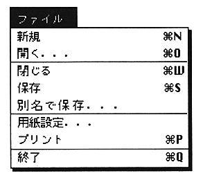
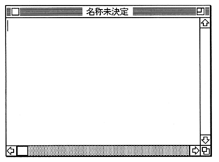

Return to previous page ｜ Return to menu ｜ Go to next page
-
3. Menu reference
-
File menu
- The “File” menu provides commands for creating, saving, and printing source (text), and for opening and closing existing text.

-
New (shortcut: Command-N)
- Create and open a new text window. At this time, the name of the window is “Untitled”.

Return to previous page ｜ Return to menu ｜ Go to next page